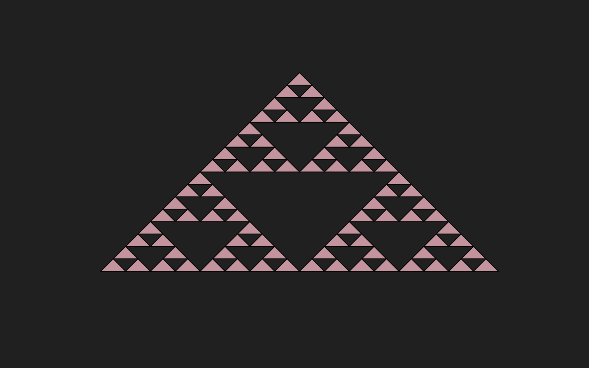

Sierpinski Triangle Fractal

Purely geometric fractals can be made by repeating a simple process. The Sierpinski Triangle is made by repeatedly removing the middle triangle from the prior generation. The number of colored triangles increases by a factor of 3 each step, 1,3,9,27,81,243,729, etc.
How to draw Sierpinski Triangle:
1. Sierpinski's triangle starts as a triangle of equal lengths.
2. We split the triangle into four equal triangles by connecting the centers of each side together.
3. We then repeat this process on the 3 newly created smaller triangles.
4. This process is repeated several times on each newly created smaller triangle to arrive at the picture displayed.